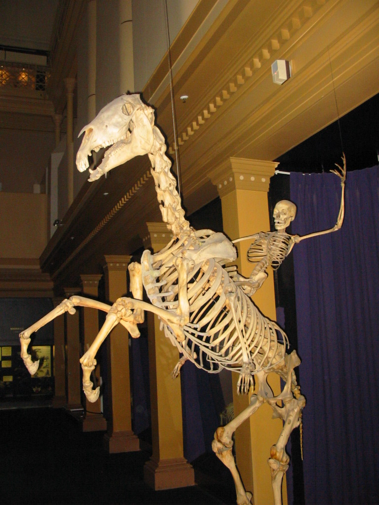

Om meg
Jeg heter Eshley og bor i Norge. Jeg studerer programmering og liker å lære nye ting.
Mine interesser
Jeg liker programmering og teknologi.
Jeg liker også sport og kunstløp.
På fritiden liker jeg å gå tur og høre på musikk.

Min favorittaktivitet
En av aktivitetene jeg liker best er kunstløp. Jeg synes det er både utfordrende og interessant.
Mine mål
I fremtiden vil jeg lære mer om programmering, utvikle meg og kanskje erobre verden 😈